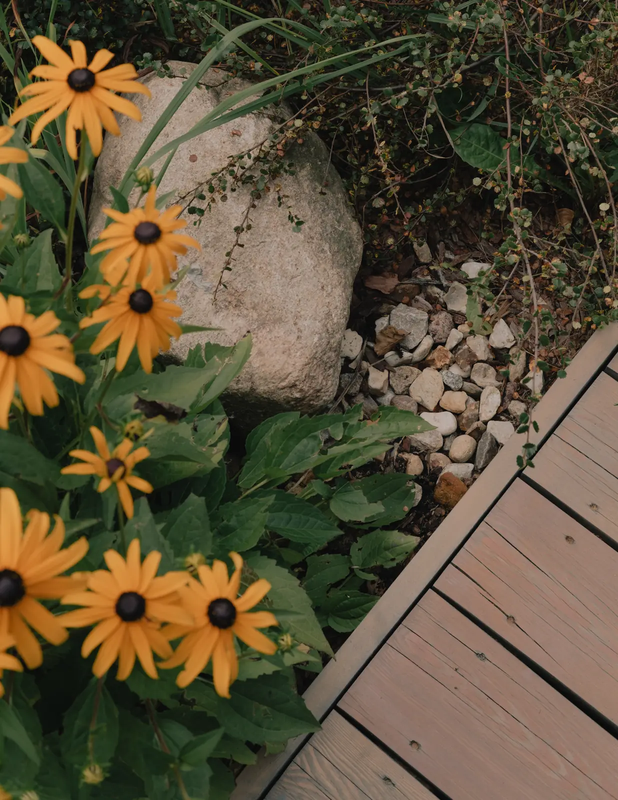
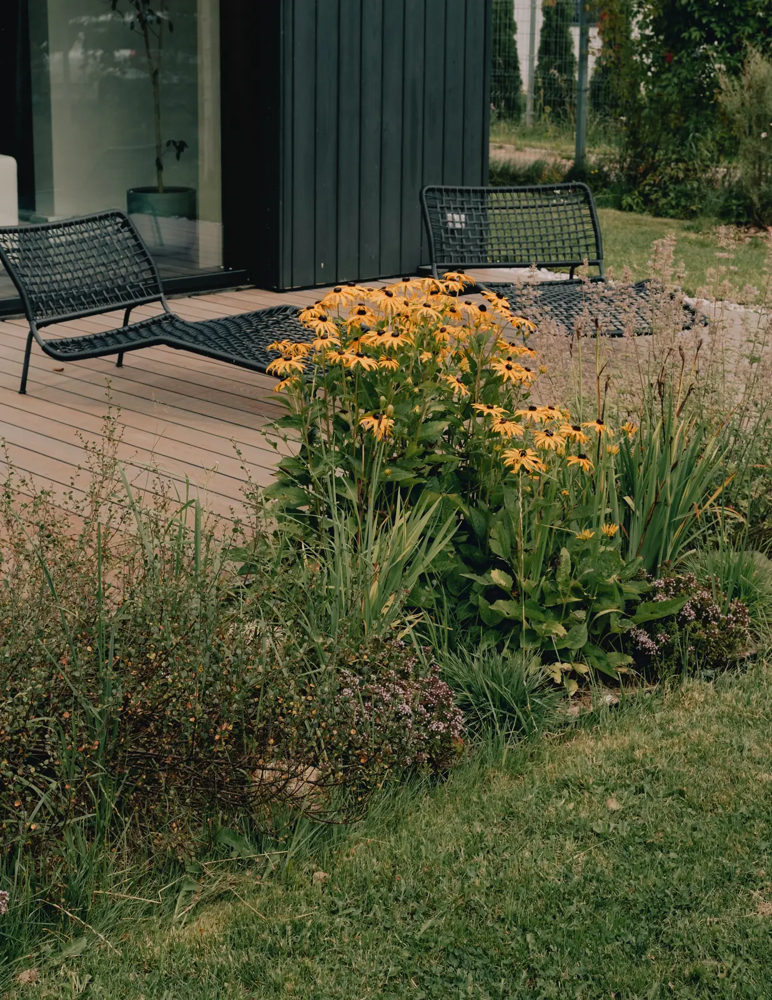
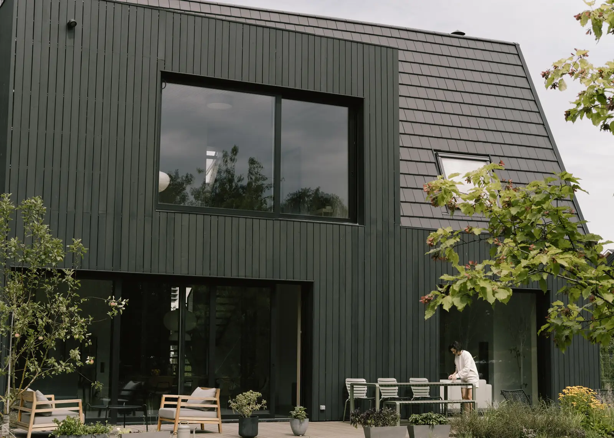
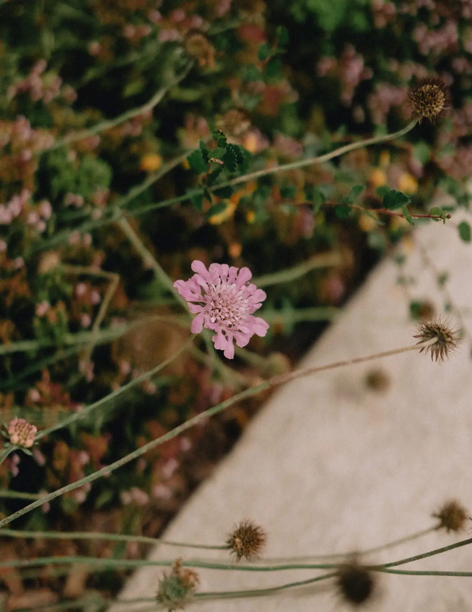
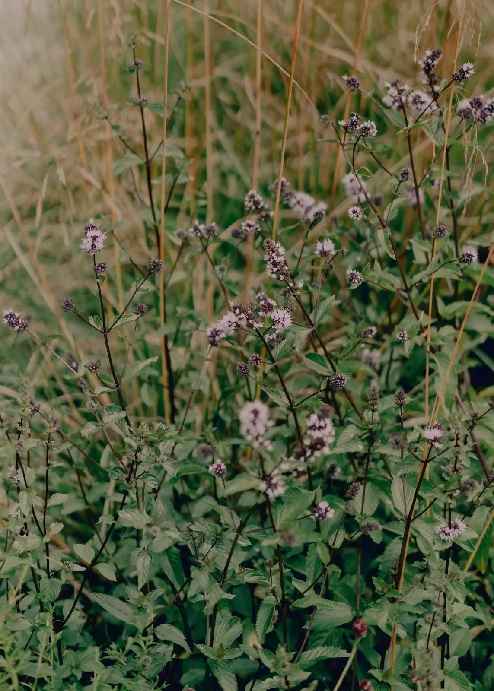
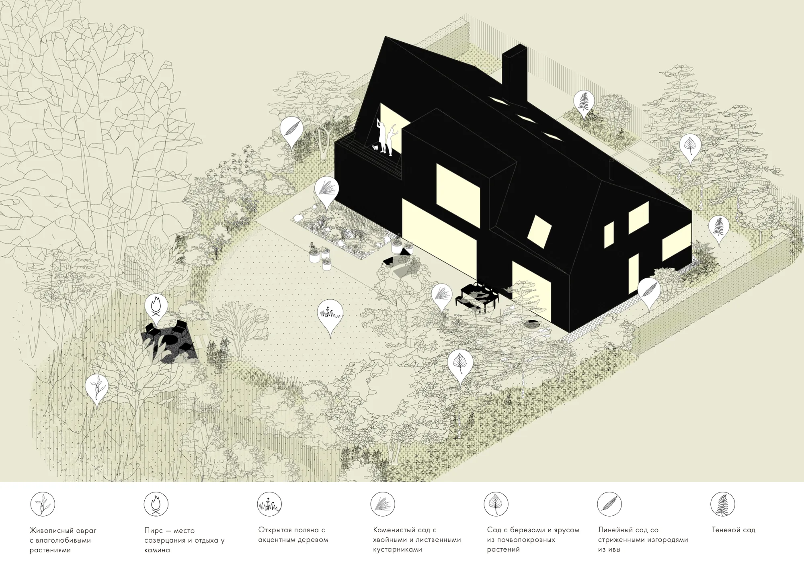
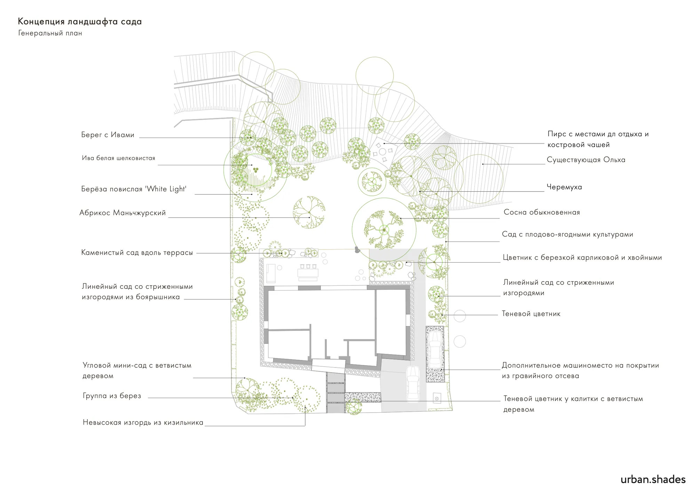
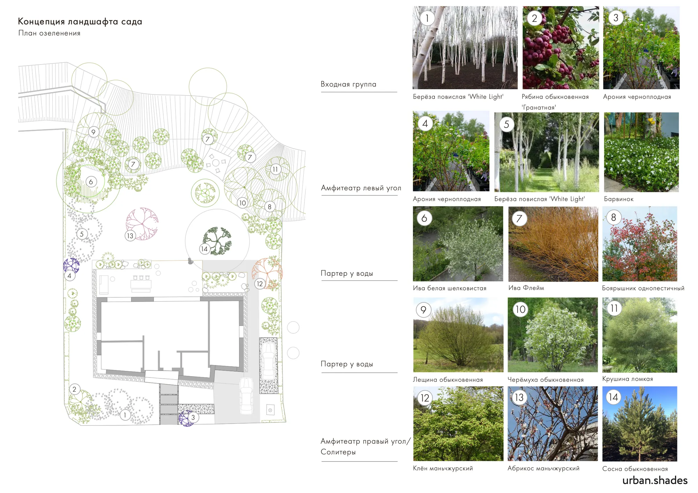

пучково
Участок в тихой деревне Пучково рядом с Троицком. Ландшафт строится на плавном переходе от парадного входа к оврагу: тенистый сад у дома сменяется каменистым участком, сухим лугом и влажным берегом ручья.
Глухой фасад дома закрывает улицу, а со стороны сада вмещает окружающий пейзаж. Мы раскрыли новые ракурсы на берег и создали места для отдыха, чтения и созерцания — среди них пирс над оврагом с местом для костра.
Выбор растений вдохновлён аборигенной флорой: сад поддерживает естественный ландшафт в его художественном переосмыслении.




чертежи и схемы


